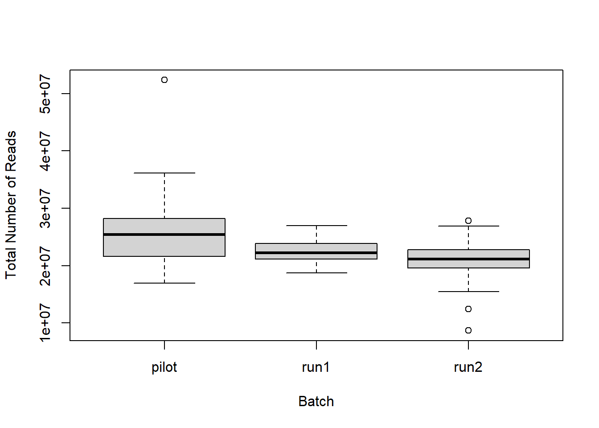
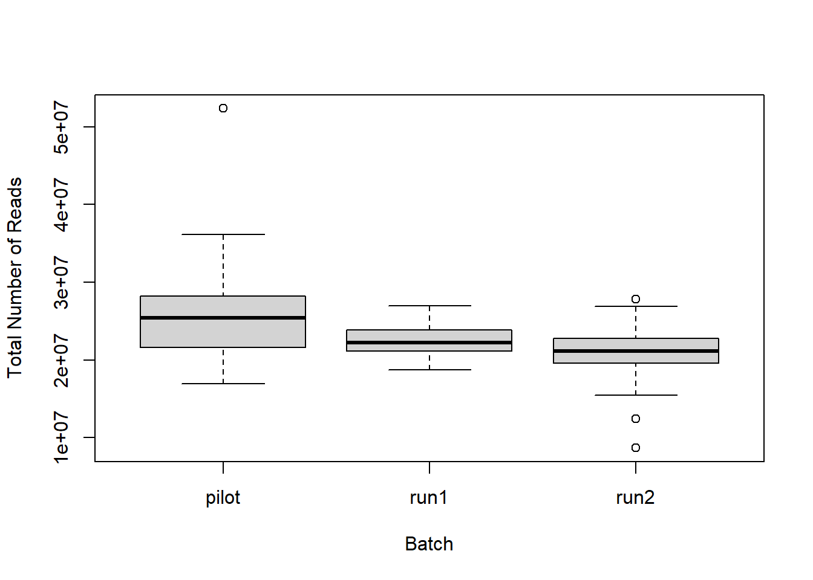
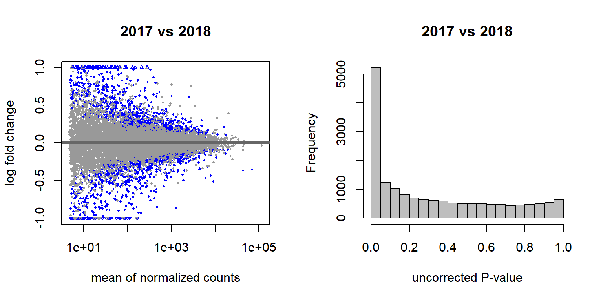
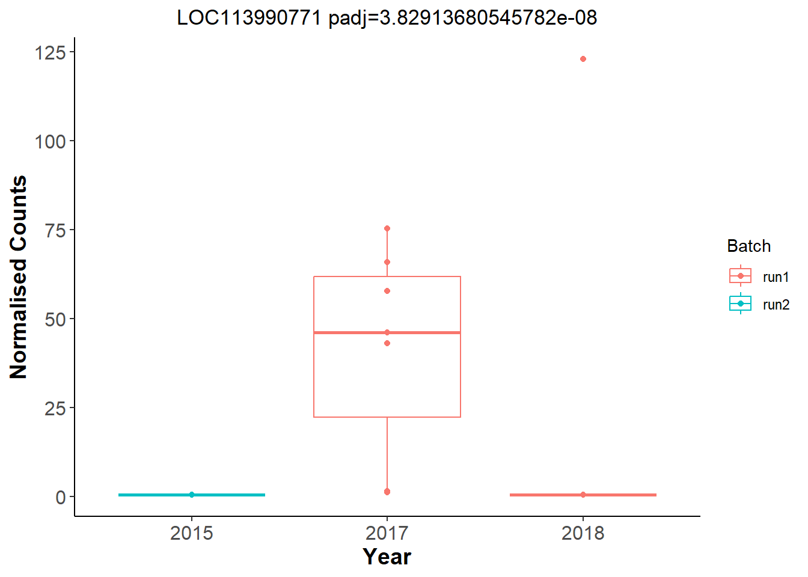
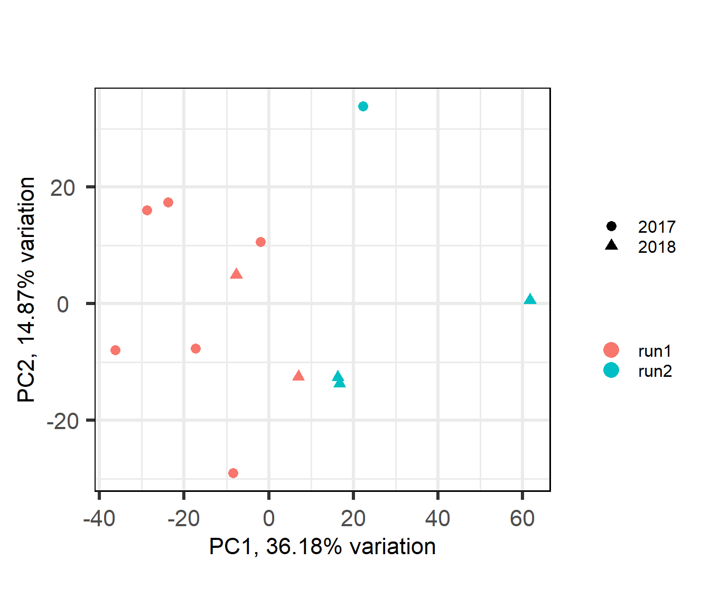

Gene Expression QC
For manuscript: Neurogenomic landscape of male cooperative behavior in a wild bird
Peri Bolton
Last Knit “2022-02-05”
Sampling
There are a total of 186 sequenced samples, across 16 individuals and 9-12 Tissues per individual. Each individual’s tissue has a unique library prep. Four tissues from the four individuals in the 2015 pilot study were repeated with fresh library preps and run alongside the new samples. Individuals/libraries were randomized across Batchs.
| PFT1 | PFT10 | PFT11 | PFT12 | PFT2 | PFT3 | PFT4 | PFT5 | PFT6 | PFT7 | PFT8 | PFT9 | TF1 | TF2 | TT1 | TT2 | |
|---|---|---|---|---|---|---|---|---|---|---|---|---|---|---|---|---|
| pilot | 0 | 0 | 0 | 0 | 0 | 0 | 0 | 0 | 0 | 0 | 0 | 0 | 9 | 6 | 8 | 7 |
| run1 | 5 | 7 | 6 | 8 | 8 | 3 | 8 | 7 | 8 | 7 | 5 | 5 | 1 | 0 | 0 | 0 |
| run2 | 7 | 5 | 6 | 4 | 4 | 9 | 4 | 5 | 4 | 5 | 7 | 7 | 3 | 3 | 3 | 2 |
| AH | AI | BSTm | GCT | GON | ICO | LS | PIT | POM | PVN | TNA | VMH | |
|---|---|---|---|---|---|---|---|---|---|---|---|---|
| pilot | 0 | 3 | 4 | 1 | 4 | 3 | 3 | 0 | 4 | 0 | 4 | 4 |
| run1 | 0 | 11 | 0 | 8 | 12 | 6 | 0 | 8 | 12 | 0 | 10 | 11 |
| run2 | 12 | 1 | 12 | 4 | 3 | 6 | 12 | 4 | 3 | 12 | 5 | 4 |
| floater | territorial | |
|---|---|---|
| pilot | 15 | 15 |
| run1 | 30 | 48 |
| run2 | 37 | 41 |

##
## Wilcoxon rank sum test with continuity correction
##
## data: files_key$Number.of.Reads[files_key$Batch == "run1"] and files_key$Number.of.Reads[files_key$Batch == "run2"]
## W = 3976, p-value = 0.0009372
## alternative hypothesis: true location shift is not equal to 0Mapping Results
Briefly, I used STAR to map the reads to the Pipra filicauda genome V1.
 

The above plot identifies 3 samples that mapped poorly, and these samples also had low RNA concentrations. Samples PFT3_AI_run2, PFT6_AH_run2, PFT9_ICO_run2 will be excluded from further analyses. Then genes with an average count of greater than or equal to 5 will be excluded from downstream analysis.
Exploration of the expression data
These data have been filtered a little bit already to exclude individuals with low read mapping, and genes with a mean read count of <5.
Here I will document the variation across tissues.

Batch differences and outlier detection
The primary purpose of these analyses is to determine:
Do Year and Batch influence need to be accounted for?
Whether there is a significant library effect - as per the replicated samples.
Whether there are any significantly outlying samples.
All Samples PCA and WGCNA
Here I will use PCA outliers and WGCNA outliers to guide initial filtering.

## [1] "Batch"
## [1] "Harvest_ID"
## [1] "Tissue"
## [1] "Year"
There appears to be some variation explained by Year and Batch variables.
## [1] "Batch" "Tissue" "Status" "Year" "Run1" "Run2" "AH" "AI"
## [9] "BSTm" "GCT" "ICO" "LS" "PIT" "POM" "PVN" "TNA"
## [17] "VMH" "yr2017" "yr2018"
Year and Batch Effects
The DESeq design for the full dataset here is ~ Year + Batch + ind.n + Tissue. This includes the replicate samples separated out.
Batch Effects
There are 4577 genes with an adjusted p-val of <0.05, and therefore differentially expressed with respect to sequencing run1 and run2 in 2019. Approximately equal numbers of genes were differentially expressed up or down.


Year effects


## (polygon[GRID.polygon.367], polygon[GRID.polygon.368], polygon[GRID.polygon.369], polygon[GRID.polygon.370], text[GRID.text.371], text[GRID.text.372], text[GRID.text.373], text[GRID.text.374], text[GRID.text.375])Gonads only
Let’s look for Batch and year effects just in run 1 vs run 2, and only in the gonads.

## [1] "Batch"
## [1] "Year"

Let’s have a look at the plots for the most significant gene.

Now compare which DEGs are shared between batch in Gonads and the overall dataset.

## (polygon[GRID.polygon.629], polygon[GRID.polygon.630], polygon[GRID.polygon.631], polygon[GRID.polygon.632], text[GRID.text.633], text[GRID.text.634], lines[GRID.lines.635], text[GRID.text.636], lines[GRID.lines.637], text[GRID.text.638], text[GRID.text.639])And now let’s explore Year in the Gonads.

An example top gene 
And within the Gonads, which of the DEGs associated with Year and Batch are shared?

## (polygon[GRID.polygon.732], polygon[GRID.polygon.733], polygon[GRID.polygon.734], polygon[GRID.polygon.735], text[GRID.text.736], text[GRID.text.737], text[GRID.text.738], text[GRID.text.739], text[GRID.text.740])There is colinearity between Batch and Year in both the full dataset and the single tissue test dataset. All subsequent models will include a composite variable for Year and Batch (Year_Batch) to account for these effects in subsequent analyses.
Random Variable
Create a random variable that has the same proportions as Batch and ensure that the p-value distribution does not have an over-abundance of values <0.05, which suggests that the samples were drawn from different distributions. This is essentially a test to ensure that what we are seeing with respect to Batch (and Year) above isn’t just random noise.
#create a random variable and test against that:
set.seed(1283)
x<- sample(LETTERS[1:3], 183, replace=TRUE, prob=c(0.43,0.41,0.16))
dd$random_variable<- as.factor(x)
design(dd)<- formula(~random_variable)
dd<- DESeq(dd)
testres<- results(dd)
par(mfrow=c(1,2))
plotMA(testres, ylim=c(-1,1))
hist(testres$pvalue, breaks=20, col="grey")
These results suggest that these few differentially expressed genes are drawn from the same distribution, so the results we saw previously are probably real.
Replicate Samples

## null device
## 1
There are 64 differentially expressed genes between replicates. Given that we have batch effects (with respect to Flow Cell and with respect to Year sampled), but also there is not really a strong library prep effect as shown in the replicate samples, I will take the first (pilot) instance of each replicate to include in further analyses. In addition, all subsequent analyses will include include the batch variables where necessary.
Finalizing dataset
Finally, using the replicate removed dataset we will do final PCA explorations of brain, gonad and pituitary data.
WGCNA outlier dendrograms
## Flagging genes and samples with too many missing values...
## ..step 1
## ..Excluding 650 genes from the calculation due to too many missing samples or zero variance.
## ..bad gene count: 650, bad sample counts: 0, 0, 0, 0, 0, 0, 0, 0, 0, 0, 0, 0
## ..step 2
## ..bad gene count: 650, bad sample counts: 0, 0, 0, 0, 0, 0, 0, 0, 0, 0, 0, 0## Removing genes: LOC113989199, LOC113996415, LOC113999600, LOC113986114, MAL, LOC113986212, ANXA8L1, LOC113987670, LOC113986738, WNT8B, LOC113987002, LOC113987116, MYOZ1, LOC113988486, LOC113988740, LOC113988891, LOC113992422, LOC113993367, KCNK18, LOC113993033, AADAC, LOC113993640, LOC113994023, LOC113994379, LOC113995269, SFTPB, LOC113995459, LOC113995786, LOC113996023, LOC113996839, LOC113997790, LOC113998007, LOC113998263, LOC113998259, LOC113998377, LOC113999047, GATA4, LOC113999270, LOC114000781, LOC114000769, LOC114001312, FBXO47, LOC114003305, TTR, LOC114003649, LOC114003715, SAMD3, LOC113982079, LOC113982548, LOC113983794, LOC113984316, LOC113984309, LOC113984314, LOC113985336, FBXO43, LOC113986136, LOC113986191, PIGR, LOC113986283, ARHGEF38, LOC113986442, IL1R2, LOC113986398, LOC113986463, HOXC9, LOC113986726, LOC113986794, LOC113986682, LOC113986828, LOC113986872, LOC113986873, LOC113986863, INSL5, LOC113986944, LOC113986929, LOC113986927, LOC113986977, TFAP2E, LOC113987072, LOC113987083, LOC113987084, LOC113987081, LOC113987149, LOC113987108, LOC113987187, LOC113987185, LOC113987200, LOC113987255, LOC113987264, LOC113987263, LOC113987281, LOC113987288, SKOR2, LOC113987503, LOC113987522, AMBP, LOC113987633, RGR, LOC113987724, LOC113987747, LOC113987763, SLC13A1, LOC113987776, LOC113987831, LOC113987862, LOC113987864, LOC113987888, LOC113987895, POU4F2, LOC113987959, LOC113987963, LOC113988223, LOC113988342, BEST3, LOC113988402, LOC113988418, LOC113988517, FOXB2, LOC113988692, ADGRG4, ODF3B, LOC113988726, LOC113988749, LOC113988821, LOC113988842, LOC113988841, LOC113988850, LOC113988869, LOC113988848, LOC113988935, LMOD3, LOC113988904, LOC113988949, LOC113989036, LOC113989078, LOC113989285, LOC113989318, LOC113989339, LOC113989352, LOC113989372, LOC113989386, LOC113989391, LOC113989389, LOC113989446, LOC113989451, LOC113989513, LOC113989512, NKX2-4, LOC113989551, LOC113989566, LOC113989656, LOC113989665, LOC113989658, LOC113989659, LOC113989625, LOC113989669, LOC113989691, LOC113989707, HOXA7, LOC113989790, LOC113989799, LOC113989826, LOC113989904, LOC113990037, LOC113990036, LOC113990032, LOC113990289, LOC113990274, LOC113990313, LOC113990365, LOC113990473, LOC113990542, LOC113990550, LOC113990564, LOC113990556, MCHR2, PRDM13, LOC113990610, HMX2, LOC113990731, LOC113990730, LOC113990748, SLC13A2, LOC113990929, FOXA1, LOC113990966, LOC113991033, LOC113991016, LOC113991065, LOC113991122, LOC113991141, LOC113991148, LOC113991194, LOC113991156, LOC113991173, LOC113991174, LOC113991222, LOC113991258, GPR15, LOC113991466, NR1I3, NPBWR1, LOC113991674, LOC113991718, LOC113991733, LOC113991947, PNPLA1, LOC113992030, LOC113992013, LOC113992029, LAD1, LOC113992074, ACTL10, LOC113992118, CLDN3, LOC113992192, LOC113992209, LOC113992241, LOC113992243, LOC113992270, LOC113992273, SERPINA10, LOC113992303, PLG, LOC113992335, LOC113992356, LOC113992407, LOC113992415, LOC113992533, LOC113992531, LOC113992568, SIM2, LOC113992756, PLA1A, LOC113992757, ACRBP, LOC113992808, LOC113992872, LOC113992844, LOC113992845, LOC113992938, LOC113992941, LOC113993051, LOC113993059, LOC113993081, LOC113993177, LOC113993204, LOC113993205, LOC113993219, LOC113993269, LOC113993254, LOC113993326, LOC113993325, LOC113993461, LHX3, LOC113993505, ATOH1, LOC113993534, LOC113993507, LOC113993508, LOC113993554, LOC113993569, LOC113993568, LOC113993581, LOC113993651, LOC113993653, LOC113993721, LOC113993764, LOC113993855, LOC113993908, LOC113993884, DBX1, LOC113993925, LOC113993965, LOC113993989, LOC113994029, LOC113994136, LOC113994191, LOC113994285, LOC113994291, LOC113994243, LOC113994215, LOC113994283, LOC113994290, LOC113994293, LOC113994311, LOC113994324, LOC113994362, LOC113994405, PNOC, LOC113994435, HOXD8, LOC113994486, LOC113994647, LOC113994648, LOC113994669, LOC113994709, LOC113994754, OLIG3, LOC113994811, LOC113994810, LOC113994817, LOC113994818, LOC113994815, LOC113994890, LOC113994907, LOC113994879, LOC113994912, LOC113994910, LOC113994906, LOC113994904, LOC113994983, LOC113994979, LOC113994974, LOC113995007, LOC113995013, CRYBA2, LOC113995299, LOC113995163, LOC113995166, LOC113995248, ASB18, LOC113995308, LOC113995328, LOC113995412, LOC113995507, LOC113995566, FSHB, LOC113995701, HIPK4, LOC113995902, RNF212, LOC113996045, DND1, LOC113996062, LOC113996077, LCA5L, SH3BGR, LOC113996129, MPZL3, TMPRSS4, LOC113996218, LOC113996219, LOC113996260, LOC113996370, LOC113996383, LOC113996382, LOC113996414, LOC113996418, LOC113996436, HOXB6, LOC113996629, LOC113996773, PRR35, LOC113996719, LOC113996779, LOC113996819, CUNH4orf54, LOC113996860, LOC113996871, TFAP2D, LOC113996937, FOXA2, LOC113997051, LOC113997043, LOC113997052, LOC113997097, LOC113997078, LOC113997146, LOC113997194, LOC113997277, LOC113997307, LOC113997314, LOC113997335, LOC113997328, APOA5, PRDM12, FGA, LOC113997603, SLC30A3, LOC113997813, LOC113997832, HABP2, LOC113997948, LOC113998110, LOC113998115, LRRC52, NPHS2, TLX3, LOC113998350, LOC113998359, LOC113998367, LOC113998397, LOC113998410, LOC113998448, LOC113998551, LOC113998600, LOC113998587, LOC113998654, LOC113998717, LOC113998716, LOC113998734, LOC113998764, LOC113998853, LOC113998845, LOC113998956, LOC113999006, LOC113999061, LOC113999072, LOC113999153, TMEM79, LOC113999237, LOC113999240, LOC113999277, LOC113999298, LOC113999296, LOC113999297, LOC113999309, LOC113999340, LOC113999424, AVPR1B, LOC113999541, PDE6C, LOC113999731, LOC113999776, F7, LOC113999795, LOC113999805, LOC113999851, LOC113999865, LOC113999868, GJB7, LOC113999843, LOC113999848, LOC113999863, LOC113999936, LOC113999961, LOC114000120, CUNH3orf85, LOC114000126, LOC114000184, LOC114000352, LOC114000345, LOC114000374, LOC114000638, LOC114000669, LOC114000713, LOC114000737, RFX6, LOC114000843, LOC114000933, LOC114000915, WFDC2, LOC114001160, LOC114001167, LOC114001174, LOC114001222, LOC114001234, LOC114001325, LOC114001340, LOC114001414, LOC114001415, LOC114001412, LOC114001434, TCF21, LOC114001560, LOC114001628, LOC114001630, TMEM81, PIFO, PDZK1IP1, DMBX1, TSPAN1, LOC114001885, FOXB1, LOC114001900, LOC114001911, CAPZA3, LOC114001969, LOC114002040, LOC114002024, PITX1, LOC114002061, LOC114002070, LOC114002133, KCNJ1, LOC114002188, LOC114002194, LOC114002217, LOC114002281, LOC114002283, SYCN, LOC114002415, LOC114002423, LOC114002528, LOC114002499, LOC114002503, LOC114002501, LOC114002527, LOC114002576, LOC114002598, LOC114002616, C8A, ANGPTL3, LOC114002757, LOC114002734, LOC114002772, LOC114002773, LOC114002851, LOC114002850, LOC114002885, LOC114002890, LOC114002892, LOC114002880, LOC114002894, LOC114002936, LOC114002941, LOC114002969, LOC114003230, HAAO, LOC114003382, LOC114003546, LOC114003557, LOC114003569, LOC114003583, LOC114003618, LOC114003623, LOC114003753, LOC114003876, PTF1A, LOC114004103, LOC114004175, LOC114004162, CUNH21orf58, KMO, LOC114004240, LOC114004301, LOC114004303, LOC114004308, LOC114004313, DMRT3, LOC113981980, LOC113981981, LOC113981956, LOC113982004, LOC113982027, LOC113982105, LOC113982199, LOC113982191, LOC113982196, LOC113982195, LOC113982194, LOC113982279, LOC113982294, RBBP8NL, LOC113982344, LOC113982436, LOC113982502, LOC113982515, LOC113982517, LOC113982497, LOC113982607, LOC113982725, LOC113982736, LOC113982808, LOC113982853, MUC16, LOC113982893, LOC113982908, ONECUT3, LOC113982937, LOC113982996, CUNH14orf39, LOC113983033, LOC113983034, LOC113983059, LOC113983145, LOC113983191, LOC113983202, LOC113983251, LOC113983278, LOC113983285, LOC113983353, LOC113983377, LOC113983387, LOC113983399, LOC113983400, LOC113983391, LOC113983438, LOC113983421, LOC113983425, LOC113983476, LOC113983461, LOC113983462, LOC113983486, LOC113983506, LOC113983526, LOC113983555, LOC113983581, LOC113983592, FETUB, LOC113983735, LHX9, LOC113983826, SPATA46, LOC113983880, LOC113983987, LOC113984055, LOC113984094, LOC113984164, LOC113984208, NKX3-1, LHX5, LOC113984296, LOC113984555, LOC113984595, LOC113984571, LOC113984661, LOC113984701, LOC113984727, LOC113984885, LOC113984918, LOC113984977, LOC113984969, LOC113985010, LOC113985080, LOC113985086, TEKT3, LOC113985117, LOC113985140, LOC113985156, LOC113985192, LOC113985217, LOC113985252, LOC113985251, LOC113985261, C1QL4, LOC113985324, LOC113985504, LOC113985549, LOC113985665, LOC113985554, LOC113985645, LOC113985682, LOC113985674, LOC113985722, LOC113985812, LOC113985878, LOC113985925, LOC113986065
Brain

## [1] "Tissue"
## [1] "Year_Batch"
Gonads

Pituitary

Confound between tissue and batch
On discussions with Chris, it is possible the number of genes we are seeing as differentially expressed in the main analysis is owing to a confound between tissue and batch, as a few tissues are sequenced exclusively on a single batch. To explore this, we can see whether the DEGs for batch are the same as those for tissue differences. Tissue will be AH, which only has run 2 and PIT, which was compared at Run 1 vs Run 2
| AH | PIT | |
|---|---|---|
| run1 | 0 | 8 |
| run2 | 11 | 4 |

## (polygon[GRID.polygon.1238], polygon[GRID.polygon.1239], polygon[GRID.polygon.1240], polygon[GRID.polygon.1241], text[GRID.text.1242], text[GRID.text.1243], text[GRID.text.1244], text[GRID.text.1245], text[GRID.text.1246])## (polygon[GRID.polygon.1247], polygon[GRID.polygon.1248], polygon[GRID.polygon.1249], polygon[GRID.polygon.1250], polygon[GRID.polygon.1251], polygon[GRID.polygon.1252], text[GRID.text.1253], text[GRID.text.1254], text[GRID.text.1255], text[GRID.text.1256], text[GRID.text.1257], text[GRID.text.1258], text[GRID.text.1259], text[GRID.text.1260], text[GRID.text.1261], text[GRID.text.1262])However, when you run PIT on its own with respect to batch there are 2441 differentially expressed genes. Seems like tissues need to be kept separate to remove this confound.
## R version 4.0.2 (2020-06-22)
## Platform: x86_64-w64-mingw32/x64 (64-bit)
## Running under: Windows 10 x64 (build 19042)
##
## Matrix products: default
##
## locale:
## [1] LC_COLLATE=English_Australia.1252 LC_CTYPE=English_Australia.1252
## [3] LC_MONETARY=English_Australia.1252 LC_NUMERIC=C
## [5] LC_TIME=English_Australia.1252
##
## attached base packages:
## [1] grid parallel stats4 stats graphics grDevices utils
## [8] datasets methods base
##
## other attached packages:
## [1] wesanderson_0.3.6 VennDiagram_1.6.20
## [3] futile.logger_1.4.3 kableExtra_1.3.1
## [5] WGCNA_1.69 fastcluster_1.1.25
## [7] dynamicTreeCut_1.63-1 pheatmap_1.0.12
## [9] lubridate_1.8.0 DESeq2_1.28.1
## [11] SummarizedExperiment_1.18.1 DelayedArray_0.14.0
## [13] matrixStats_0.56.0 Biobase_2.48.0
## [15] GenomicRanges_1.40.0 GenomeInfoDb_1.24.0
## [17] IRanges_2.22.2 S4Vectors_0.26.1
## [19] BiocGenerics_0.34.0 stringr_1.4.0
## [21] PCAtools_2.0.0 cowplot_1.0.0
## [23] lattice_0.20-41 ggrepel_0.8.2
## [25] ggplot2_3.3.5 reshape2_1.4.4
## [27] plyr_1.8.6
##
## loaded via a namespace (and not attached):
## [1] colorspace_1.4-1 ellipsis_0.3.2
## [3] htmlTable_2.0.1 XVector_0.28.0
## [5] base64enc_0.1-3 rstudioapi_0.13
## [7] farver_2.0.3 bit64_0.9-7
## [9] AnnotationDbi_1.50.0 fansi_0.4.1
## [11] xml2_1.3.2 codetools_0.2-16
## [13] splines_4.0.2 doParallel_1.0.15
## [15] impute_1.62.0 geneplotter_1.66.0
## [17] knitr_1.29 Formula_1.2-3
## [19] annotate_1.66.0 cluster_2.1.0
## [21] GO.db_3.11.4 png_0.1-7
## [23] compiler_4.0.2 httr_1.4.2
## [25] dqrng_0.2.1 backports_1.1.7
## [27] assertthat_0.2.1 Matrix_1.2-18
## [29] fastmap_1.1.0 limma_3.44.3
## [31] formatR_1.8 BiocSingular_1.4.0
## [33] acepack_1.4.1 htmltools_0.5.2
## [35] tools_4.0.2 rsvd_1.0.3
## [37] gtable_0.3.0 glue_1.5.1
## [39] GenomeInfoDbData_1.2.3 dplyr_1.0.7
## [41] Rcpp_1.0.7 jquerylib_0.1.4
## [43] vctrs_0.3.8 preprocessCore_1.50.0
## [45] iterators_1.0.12 DelayedMatrixStats_1.10.0
## [47] xfun_0.29 rvest_1.0.2
## [49] lifecycle_1.0.1 irlba_2.3.3
## [51] XML_3.99-0.5 zlibbioc_1.34.0
## [53] scales_1.1.1 lambda.r_1.2.4
## [55] RColorBrewer_1.1-2 yaml_2.2.1
## [57] memoise_1.1.0 gridExtra_2.3
## [59] rpart_4.1-15 latticeExtra_0.6-29
## [61] stringi_1.4.6 RSQLite_2.2.0
## [63] highr_0.8 genefilter_1.70.0
## [65] foreach_1.5.0 checkmate_2.0.0
## [67] BiocParallel_1.22.0 rlang_0.4.12
## [69] pkgconfig_2.0.3 bitops_1.0-6
## [71] evaluate_0.14 purrr_0.3.4
## [73] labeling_0.3 htmlwidgets_1.5.3
## [75] bit_4.0.4 tidyselect_1.1.0
## [77] magrittr_2.0.1 R6_2.4.1
## [79] generics_0.0.2 Hmisc_4.4-0
## [81] DBI_1.1.0 pillar_1.6.4
## [83] foreign_0.8-80 withr_2.4.3
## [85] survival_3.2-3 RCurl_1.98-1.2
## [87] nnet_7.3-14 tibble_3.1.6
## [89] crayon_1.4.2 futile.options_1.0.1
## [91] utf8_1.1.4 rmarkdown_2.11
## [93] jpeg_0.1-8.1 locfit_1.5-9.4
## [95] data.table_1.13.0 blob_1.2.1
## [97] webshot_0.5.2 digest_0.6.25
## [99] xtable_1.8-4 munsell_0.5.0
## [101] viridisLite_0.4.0